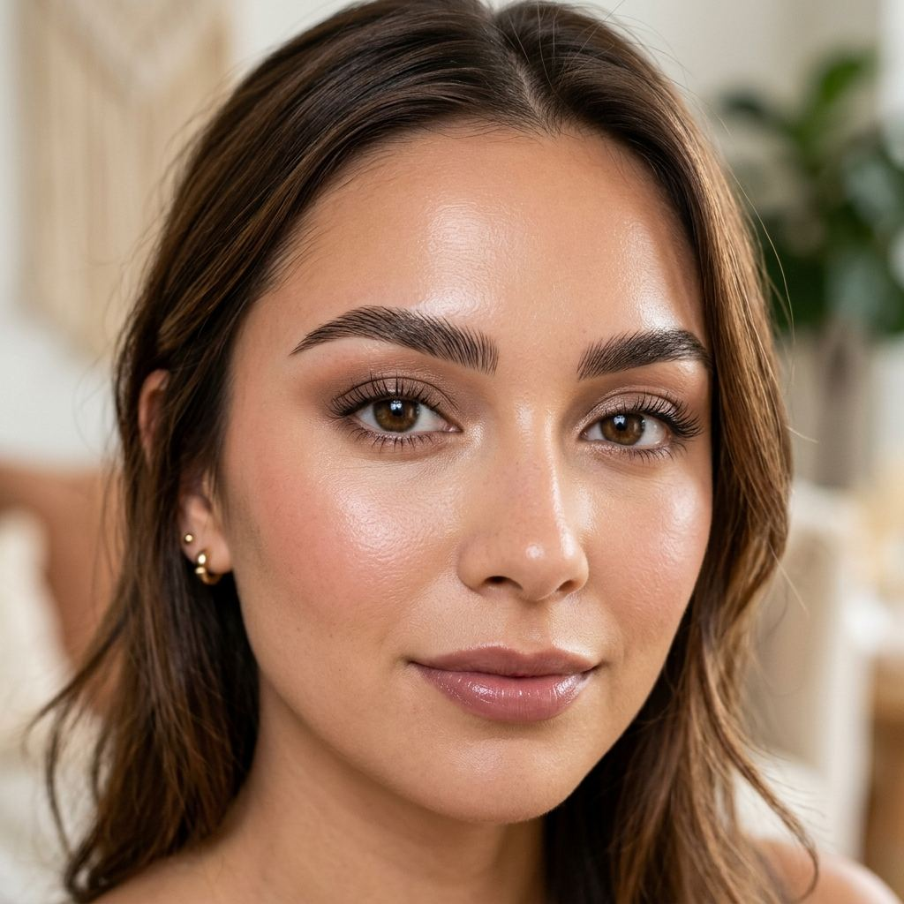

28 September 2026 · Treatments · Tabernacle Beauty
Eyebrow embroidery: healing, aftercare, and how long it lasts
Eyebrow embroidery is a semi-permanent shape, not a tint and not a tidy-up. Results typically last one to two years. This guide explains the healing pattern clients actually see, the aftercare that protects it, and how embroidery sits next to threading and henna on our menu.

What embroidery is, and what it is not
Embroidery places fine strokes that follow the direction of brow hair. Jessyca maps the shape to your bone structure so the result is not a solid block. The public site does not list a fixed embroidery price. It is quoted on WhatsApp after we know the brows and the work involved.
It is not threading. Threading removes hair and lasts until the hair grows back. It is not brow tinting, which is $28 and stains hair and skin for a much shorter time. Clients who already have a shape they like, and only want it to look fuller on a Tuesday morning, often start with tint or threading. Embroidery is for people who want that shape to stay through busy weeks.
The trust notes for this service are on why clients trust our embroidery. The short version: shape, colour, and healing are discussed before any strokes are placed, and the work is kept conservative so it can age softly.
How long results last
Results typically last 1–2 years depending on skin type and aftercare. A touch-up around the 12-month mark keeps the brows looking fresh. Oily skin, heavy brow makeup, and unprotected sun can soften colour sooner. Dry skin often holds a stain longer. Those are tendencies, not a guarantee for your face.
The healed colour is softer than the colour you see on day one. We map strokes so the shape does not turn blocky as it fades. If you want a sharper fashion brow that you can change next month, threading is the better tool.
What healing usually looks like
Every brow heals on its own clock. This is the pattern we prepare clients for. Follow the written aftercare you are given at the appointment if it is more specific than this page.
- The first few days. Colour looks darker and the strokes look sharper than the finished brow. Mild tightness is common. Keep the area clean and dry in the way you were shown.
- About the first week. Light flaking can start. Do not pick, scratch, or rub the flakes off. Pulling them out takes pigment with them.
- The next few weeks. Colour softens and can look lighter or slightly uneven while the skin settles. This is the stage when people worry the work has vanished. It usually has not.
- Healed brows. The shape should look like hair, not like a sticker. Daily SPF on healed skin helps the colour last. A review around 12 months is the usual moment to talk about a touch-up.
Aftercare that actually matters
- Leave flakes alone. Picking is the fastest way to leave a gap.
- Skip swimming, saunas, and heavy sweat sessions until you are told the skin has closed.
- Keep retinoids, acids, and brow makeup off the embroidered skin until it has healed.
- Sleep on a clean pillowcase so the area is not rubbing yesterday's product.
- Once healed, sunscreen is part of making the 1–2 years realistic.
- Threading can still tidy new hairs around the strokes. Book that as threading, not as a correction of the embroidery.
If the instructions you were given in the studio differ from this list, use the studio instructions. They were written for your appointment.
When to message us
Message the studio if you are unsure whether flaking looks normal, or if colour seems to have lifted in one spot after you picked at it. We would rather see a photo early than guess a month later.
Seek medical care, and tell us, if redness spreads, the skin feels hot, there is pus, or you feel unwell. Embroidery is a cosmetic service. It is not a reason to wait out a spreading infection at home.
Before you book
Embroidery is the wrong tool if you want to change your brow shape every month, if the skin on the brow is broken, or if you are in the middle of a strong retinoid flare. Threading or a $28 tint can cover the weeks while skin settles. Say which of those you have already tried. It tells us whether you want hair removed, colour added, or a shape that stays.
Bring a photo of your bare brows in daylight if you can, not only a filtered portrait. We still map the strokes in person. The photo stops us designing for makeup that will not be there on a Monday morning.
Ask for the quote before you reserve a long appointment. Because embroidery is not on the fixed price list, the number depends on the brows in front of us. A quote is a conversation, not a deposit taken from a menu line. Aftercare on this page is the general pattern. The instructions you leave with are the ones to follow if they are stricter.
Plan quiet days afterwards if you can. Darker colour in the first few days is normal, and heavy brow makeup is off the table while the skin closes. If you have a close-up event that week, threading is usually the kinder deadline.
Questions
How long does eyebrow embroidery last?
Results typically last 1 to 2 years depending on skin type and aftercare. A touch-up around 12 months keeps brows looking fresh. The shape is mapped to your bone structure so it fades softly rather than in a block.
Is there a fixed price?
No. Eyebrow embroidery is quoted on request. Message Jessyca on WhatsApp with what you want changed and we will confirm the work before you book.
Can I still get threading afterwards?
Yes. Threading removes new hair around the healed strokes. Wait until the embroidered skin has healed before any hair removal on the brow.